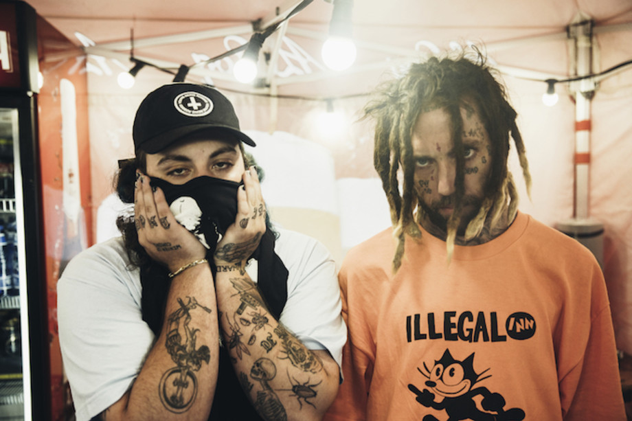

Pink Floyd fue una banda de rock británica, fundada en Londres en 1965. Es considerada un icono cultural del siglo xx y una de las bandas más influyentes y aclamadas en la historia de la música, que obtuvo gran popularidad gracias a su música psicodélica que evolucionó hacia el rock progresivo y rock sinfónico con el paso del tiempo. Es conocida por sus canciones de alto contenido filosófico, la experimentación sónica, las innovadoras portadas de sus discos y sus elaborados espectáculos en vivo. Sus ventas sobrepasan los 300 millones de álbumes vendidos en todo el mundo,97,5 millones de ellos solamente en los Estados Unidos.
Inicialmente el grupo estaba formado por el batería Nick Mason, el teclista y vocalista Richard Wright, el bajista y vocalista Roger Waters y el guitarrista y vocalista principal Syd Barrett, quien se convirtió en el primer líder de la banda. Bob Klose fue guitarrista inicialmente por un corto tiempo, pero no llegó a aparecer en ningún disco. El errático e impredecible comportamiento de Barrett, causado por el excesivo consumo de drogas, especialmente LSD, hizo que su amigo David Gilmour se integrara al grupo en diciembre de 1967 y que quedase definida la formación clásica del grupo tras la marcha de Barrett en abril de 1968.
Pink Floyd comenzó con un gran éxito en la escena underground londinense a finales de los años sesenta, con Syd Barrett como principal compositor. La salida de Barrett convirtió a Waters en el principal escritor de la banda mientras que Gilmour y Wright tomaron el protagonismo en la composición musical. El grupo grabó durante esta época muchos álbumes que se convirtieron en enormes éxitos comerciales, como The Dark Side of the Moon (1973), Wish You Were Here (1975), Animals (1977) y The Wall (1979). Después de las sesiones de grabación de The Wall el bajista Roger Waters expulsó de la banda al tecladista Rick Wright debido a que estaba disconforme con sus aportes al álbum. En 1983 el grupo lanzó el disco The Final Cut el cual tuvo un modesto éxito comparado con sus obras anteriores y la banda ni siquiera salió de gira. En 1985, Waters declaró la extinción de Pink Floyd señalando que la banda estaba agotada creativamente. Los demás miembros, Gilmour y Mason, se negaron a aceptar esta decisión y continuaron con el grupo por lo cual Waters los demandó reclamando parte de los derechos de la marca Pink Floyd. Waters perdió en tribunales pero llegó a un acuerdo con Gilmour y Mason obteniendo los derechos exclusivos sobre toda la imaginería que desplegaban en sus conciertos (incluido su famoso cerdo volador) y los derechos sobre el espectáculo audiovisual de The Wall (excluyendo los tres temas que compuso Gilmour para la obra: «Young Lust», «Run Like Hell» y «Comfortably Numb») y sobre todos los temas incluidos en The Final Cut, mientras que el resto del grupo podía seguir usando el nombre de Pink Floyd sin problemas.
Tras superar estos problemas legales, Gilmour y Mason volvieron a llamar a Wright para grabar el disco A Momentary Lapse of Reason (1987) logrando gran éxito mundial, sin embargo, Wright participó solo como tecladista asalariado y no como miembro oficial de la banda. Esto fue solucionado en el siguiente álbum The Division Bell (1994) en donde Wright se reintegra nuevamente como miembro oficial del grupo. Este es el disco de estudio de la banda en el que ya aparecen Gilmour, Mason y Wright como componentes de Pink Floyd. Waters, por su parte, se embarcó en una carrera como solista y no se volvió a reunir con Pink Floyd hasta 24 años después, el 2 de julio de 2005, en el concierto Live 8 en Londres donde tocaron las canciones «Speak to Me/Breathe», «Money», «Wish You Were Here» y «Comfortably Numb».
En noviembre de 2014 salió a la venta The Endless River, el último disco de estudio de la banda, que contiene en gran medida material grabado durante las sesiones de grabación de The Division Bell entre 1993 y 1994 sin contar con ningún aporte de Roger Waters.
En la actualidad, Pink Floyd se ha convertido en un grupo musical de culto que suma millones de fieles adeptos a su música alrededor del mundo.
Vince Fenton, a.k.a. FKJ, es un multi-instrumentista y productor procedente de Tours, Francia pero ahora residente de París, aprendió lo básico sobre producción musical mientras trabajó como ingeniero en un teatro. Con un estilo que combina el pulso del house con elementos más orgánicos y delicados, desarrolló junto a otros artistas del sello Roche Musique un subgénero electrónico del nuevo French house a principios del 2010.
FKJ es posiblemente uno de los productores que hace la música electrónica más viva y alegre que conocemos a día de hoy, al menos a un nivel de calidad alto. Ha demostrado en ya numerosas ocasiones que más que un productor, es un gran músico. Su dominio de diversos instrumentos y el hecho de también atreverse con las vocales de algunos de sus trabajos hace que estos ganen aún más puntos. Incorpora elementos del funk, soul, jazz y blues para su peculiar estilo de french house ejecutado principalmente en vivo; secuenciando ritmos desde Ableton y loopeando teclados, guitarras, saxofones y bajos que va ejecutando poco a poco. El resultado es puro groove, suaves y sofisticadas melodías con beats pegajosos.
Por cierto, French Kiwi Juice hace alusión a su herencia francesa y neozelandesa, ya que los ciudadanos de Nueva Zelanda son conocidos coloquialmente como kiwis. Desde 2012, se ha dedicado a soltar piezas de gusto y calidad altísimas dentro. Con un sonido tan reconocible en sus producciones, lo hacen uno de los productores más importantes de la nueva ola del French House.

Cigarettes After Sex es una banda de indie pop estadounidense originaria de El Paso, Texas, formada en 2008 por Greg González. Su EP debut, «I.», fue lanzado en 2012 con los sencillos «Affection» y «K» en 2015 y 2016, respectivamente. Su primer álbum de estudio homónimo, Cigarettes After Sex, fue lanzado el 9 de junio de 2017.
En agosto de 2019, la banda anunció su segundo álbum de estudio, titulado Cry, junto con el sencillo «Heavenly». El álbum fue lanzado el 25 de octubre de 2019. Cigarettes After Sex se formó en El Paso, Texas, en 2008.González grabó el primer EP, I., en su universidad, la Universidad de Texas en El Paso, calificando la experiencia de «básicamente un accidente, una especie de experimento». Nothing's Gonna Hurt You Baby, I'm a Firefighter, Dreaming of You y Starry Eyes fueron grabados para I. González se mudó a Brooklyn, Nueva York, donde el sencillo Affection de la banda fue grabado y lanzado en 2015 junto con una versión de Keep On Loving You de REO Speedwagon.
A través de recomendaciones musicales, Cigarettes After Sex ha ganado millones de visitas en la plataforma digital, YouTube, dando lugar a presentaciones en vivo en Europa, Asia y los Estados Unidos. Cigarettes After Sex lanzó su álbum debut homónimo el 9 de junio de 2017.
La canción Nothing's Gonna Hurt You Baby apareció en el episodio 7 de la primera temporada de la serie de televisión, The Handmaid's Tale, en el episodio 7 de The Sinner, y en el episodio 9 de la octava temporada de Shameless. El sencillo Apocalypse, sonó en el episodio 6 de la primera temporada de la serie danesa de Netflix, The Rain.
El 9 de junio de 2018, la banda lanzó un nuevo sencillo titulado «Crush», grabada en 2015 en Brooklyn; siendo este el día en el que su álbum homónimo Cigarretes After Sex cumpliría un año de haber sido lanzado.

Suicideboys (estilizado como $uicideboy$) es un dúo estadounidense de hip hop, oriundos de Nueva Orleans, Louisiana, fundado en 2014 por los primos Ruby da Cherry y Scrim (estilizado como $crim). Mediante la plataforma de música SoundCloud, el dúo aumentó su popularidad debido a sus duras letras, que por lo general hacen apología de la droga y del suicidio, y también debido a sus abrasivas bases, creadas por ellos mismos. Los primos son propietarios de su propio sello discográfico, G*59 Records, por el cual toda su música es distribuida mediante Caroline Distribution.
El dúo es considerado uno de los artistas más populares dentro del género Indie rap, y tienen un gran base de fanáticos muy leal e interesado en sus canciones. Después de muchos años en los que simplemente publicaban EPs y mixtapes, publicaron su primer álbum I Want to Die in New Orleans el 7 de septiembre de 2018. Al álbum le fue muy bien comercialmente, colocándose en el puesto 9 de la Billboard 200.
El primer proyecto del dúo fue un EP de tres canciones llamado Kill Yourself Part I: The $uicide $aga. Fue publicado en junio de 2014 en SoundCloud y Bandcamp, logrando captar la atención por su colaboración con el conocido rapero indie Bones. En los siguientes meses, el dúo publicó nueve iteraciones de la saga Kill Yourself. Tras varias EPs en las que colaboraron con el artista indie “Black Smurf”, su primer proyecto de larga duración llamado Gray/Grey fue publicado el 3 de marzo de 2015.
Suicideboys publicó también en 2015 el EP $outh $ide $uicide, que era una colaboración con otro rapero de Florida, Pouya, quien empujó al dúo a la escena del rap underground. En octubre de 2018, la EP consiguió más de 75 millones de reproducciones en SoundCloud. La primera aparición del dúo en listas de música mainstream se dio cuando publicaron Radical $uicide el verano de 2016. Esta EP de cinco canciones, compuestas por el productor de música EDM Getter, ascendió al puesto 17 en la “Billboard Rap charts”
El 7 de septiembre de 2018 su debut I Want to Die in New Orleans fue publicado. En la cuenta oficial de Instagram del dúo, se publicó una declaración que decía lo siguiente: “Comenzamos a grabar este álbum en el comienzo de 2017. Inicialmente queríamos escribir sobre nuestras experiencias y expresar como nuestras vidas se habían vuelto ligeramente más extravagantes.”"
Suicideboys ha conseguido una gran base de fanáticos dentro de la escena del hip hop, en parte debido a que trataban temas apenas mencionados en el rap, como son el suicidio y la depresión. En octubre de 2018, su videoclip más visto en YouTube fue el de su canción Paris, que hoy día tiene casi 100 millones de visitas; Paris, es además su canción con más reproducciones en su página de Spotify con más de 120 millones de reproducciones. El dúo apareció en la lista "Billboard Dance's 15 Artists to Watch in 2017".
A finales de 2018, surgió un rumor que afirmaba que el dúo se había separado, debido a ciertos tuits que publicó Scrim, que estaban relacionados con problemas personales y no con la separación de Suicideboys.
En mayo de 2019 el grupo silenció este rumor publicando su EP de 6 canciones, llamado Live Fast, Die Whenever en colaboración el batería de Blink-182, Travis Barker, y el guitarrista de Korn, James «Munky» Shaffer.
Rings of Saturn es una banda estadounidense de Death Metal y Deathcore formada en el Área de la bahía de San Francisco, California en 2009.
Fue originalmente formada como un proyecto de estudio, sin embargo, después de obtener una amplia popularidad y la firma de Unique Leader Records, la banda se formó una línea completa y se convirtió en una banda de gira a tiempo completo.
Rings of Saturn cuenta con un estilo muy técnico, muy influida por temas de la vida extraterrestre y el espacio exterior. Publicaron cuatro álbumes de larga duración, con su tercer álbum, Lugal Ki En, lanzado en 2014 alcanzó el puesto 126 en la lista estadounidense Billboard 200.
Rings of Saturn toca un subgénero de metal extremo conocido como deathcore, que fusiona elementos del metalcore, death metal y hardcore. El estilo de deathcore que la banda toca está influenciado por el death metal técnico, se caracteriza por ritmos muy rápidos y técnicos de sweep-picking con un efecto añadido de armonía rápida, elementos ambientales, y letras que involucran invasiones del espacio y la vida extraterrestre. La banda se auto clasificó en broma como "Aliencore".